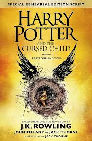

Harry Potter and the Cursed Child is a play written by Jack Thorne from an original story written by J. K. Rowling, Thorne and John Tiffany. The story is set nineteen years after the events of the 2007 novel Harry Potter and the Deathly Hallows by Rowling. It follows Albus Severus Potter, son of Harry Potter, who is now Head of the Department of Magical Law Enforcement at the Ministry of Magic. When Albus arrives at Hogwarts, he gets sorted into Slytherin, and fails to live up to his father's legacy, making him resentful of his father. Rowling has referred to the play as "the eighth Harry Potter story".
